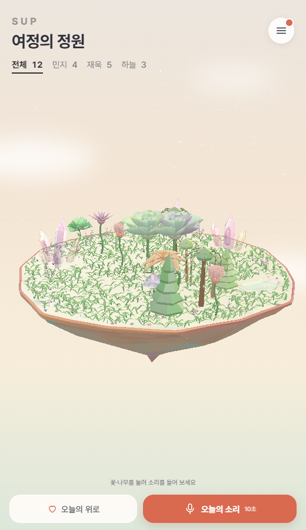
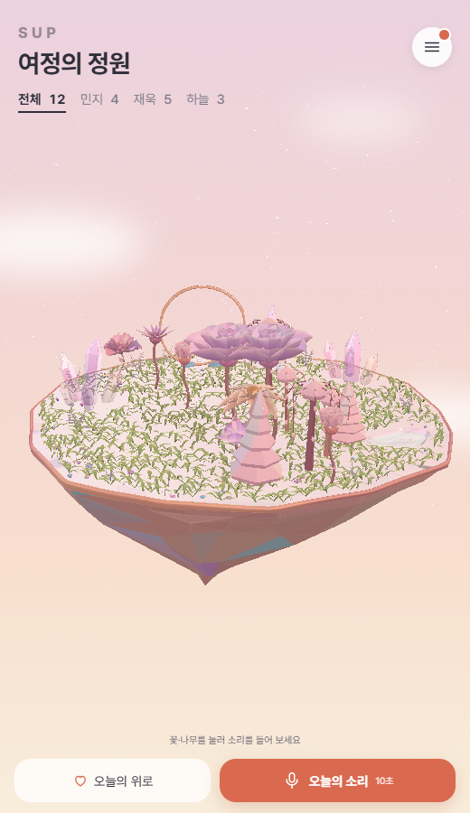
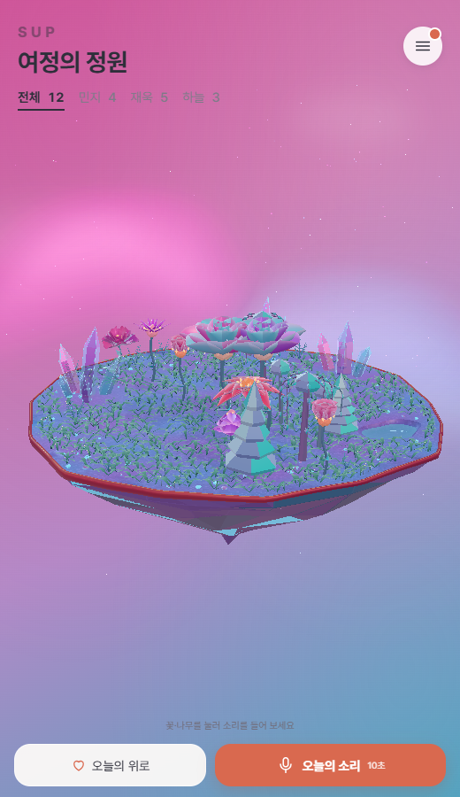
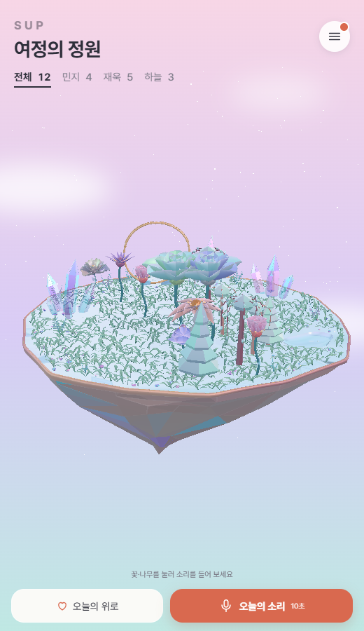

One grass system, four botanical palettes
Actual production Garden captures from the coordinated theme-selector integration, using the same camera and frozen time. All themes keep the approved small blades, 1,000 clumps, 6,000 grass triangles and one visible grass draw call. Shape and planting positions do not change with the palette.
Validation report
Balanced Warm
Sage and mint with soft yellow-green tips.

Warm Opal
Dusty green with a restrained warm tint.

Aurora Crystal
Mint and turquoise-green with cool highlights.

Original Opal
Neutral soft green with a cool mint bias.

Warm and Original retain their archived island geometry, including the upright ring. Balanced and Aurora use the centered modern island. These are two bounded placement layouts sharing the same blade design and implementation, with cached mesh resources reused between themes.